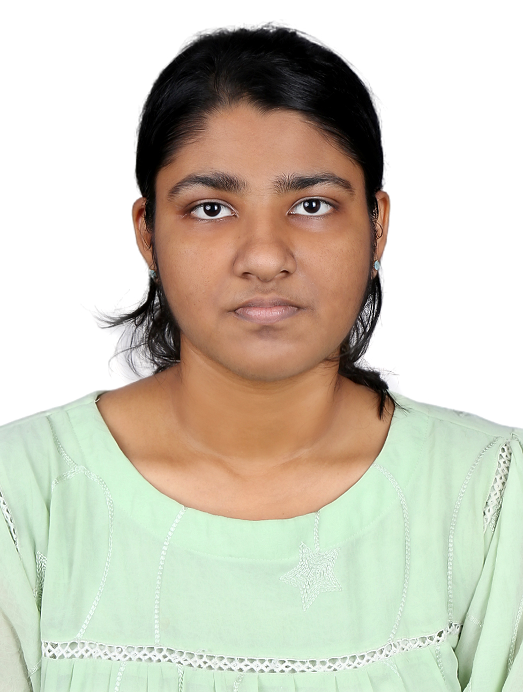
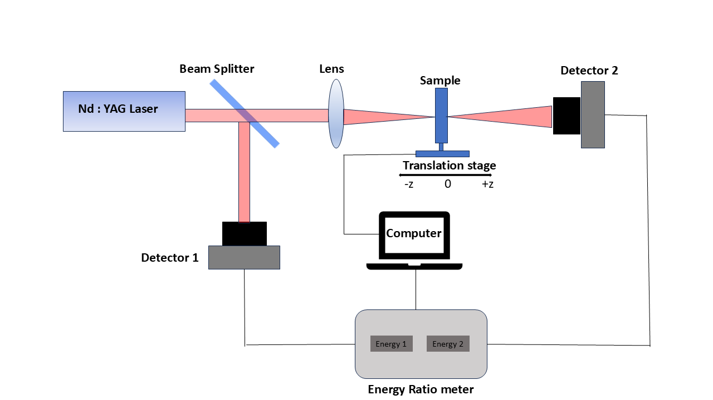
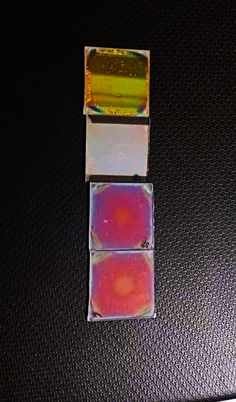
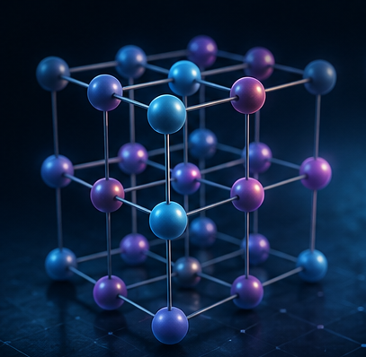

I am an early-career physicist with research interests in Photonics, Nonlinear Optics, Optical Materials, Quantum Photonics, and Condensed Matter Physics. My goal is to pursue doctoral research focused on advanced optical materials, nanophotonics, and emerging quantum technologies.
Passionate about optics, photonics, and condensed matter physics.

I recently completed my Integrated MSc in Physics from the National Institute of Science Education and Research (NISER), Bhubaneswar.
Throughout my academic journey, I developed a strong interest in experimental optics, nonlinear optical phenomena, photonic structures, and condensed matter physics. My research combines experimental techniques with theoretical understanding to investigate advanced optical materials and light–matter interactions.
I enjoy exploring interdisciplinary problems that bridge optics, materials science, and quantum technologies, and I am actively seeking opportunities to pursue a PhD in these research areas.
Integrated MSc Physics
NISER Bhubaneswar
Photonics
Nonlinear Optics
Condensed Matter
My academic journey and research experience.
Completed an Integrated MSc in Physics with coursework in Quantum Mechanics, Electromagnetism, Condensed Matter Physics, Statistical Mechanics, Computational Physics, and Nonlinear Optics.
Studied redox-controlled nonlinear optical properties of thiazine dyes using UV–Visible spectroscopy and open-aperture Z-scan measurements. Fabricated a 10.5 bilayer dielectric Bragg reflector with ~97.2% reflectance through optimization of thin-film parameters.
Investigated trapped neon composition in carbonaceous chondrites. Analyzed neon isotope data and studied meteorite components to understand early solar system processes.
Studied Brownian motion of particles using theoretical models and computer simulations. Investigated particle dynamics under harmonic and double-well potentials.
Participated in a workshop on solar activity and CME kinematics, learning about solar observations using SOHO satellite data.
Explored quantum information, quantum optics, quantum computing, quantum simulation, and quantum sensing through lectures and hands-on learning sessions.
Areas that I am currently exploring and wish to pursue further during my doctoral research.

Experimental investigation of third-order nonlinear optical response in organic dyes using the Z-scan technique and laser spectroscopy.

Design and fabrication of dielectric Bragg reflectors using polymer multilayers through spin coating.

Interested in magnetism, spintronics, optical materials, and emerging quantum materials.
Conferences and scientific meetings where I have presented my work.
International Conference on Optics, Lasers and Photonics (OPTIX 2026)
2026
International Conference on “Space for Sustainability: Science, Technology, Education and Policy (S2:STEP 2025)” and the 6th Indian Planetary Science Conference (IPSC-2025), under the theme Planetary Science and Exploration, IIT Roorkee, India
4–7 March 2025
22nd National Space Science Symposium (NSSS), Goa University, under PS3 – Solar and Planetary Sciences
26 February–1 March 2024
MetMESS 2023 held at Physical Research Laboratory (PRL), Ahmedabad
1–3 November 2023
A detailed summary of my academic background, research experience, technical skills, conference presentations, and achievements.
Feel free to get in touch regarding research, collaborations, or academic opportunities.
shehzademk@gmail.com
India